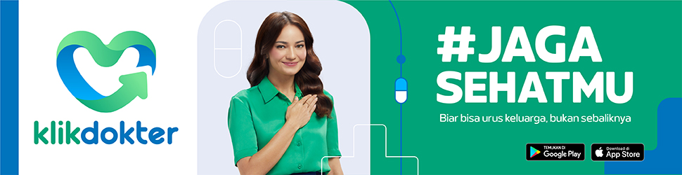
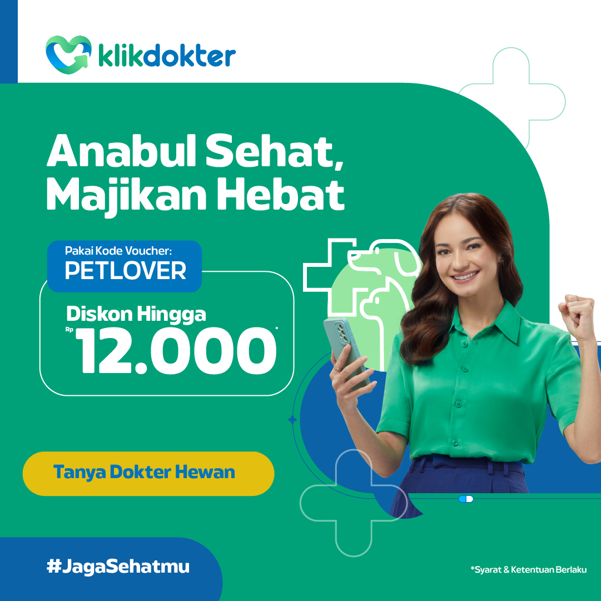
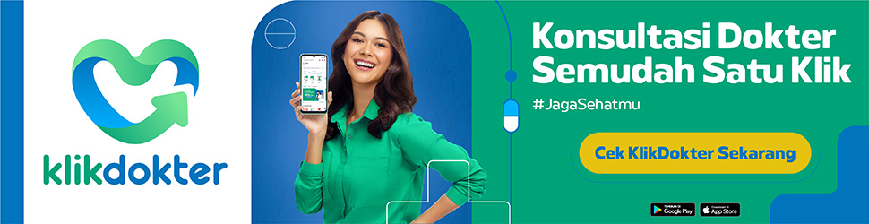
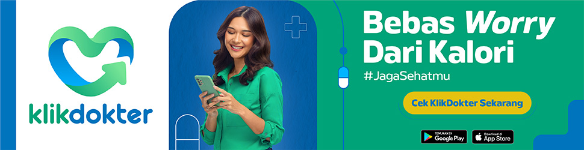
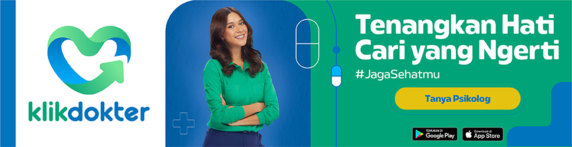
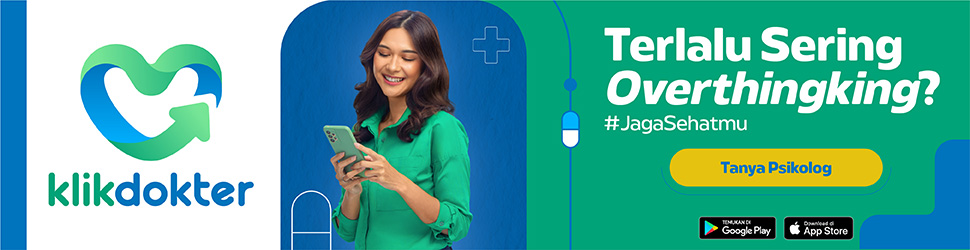
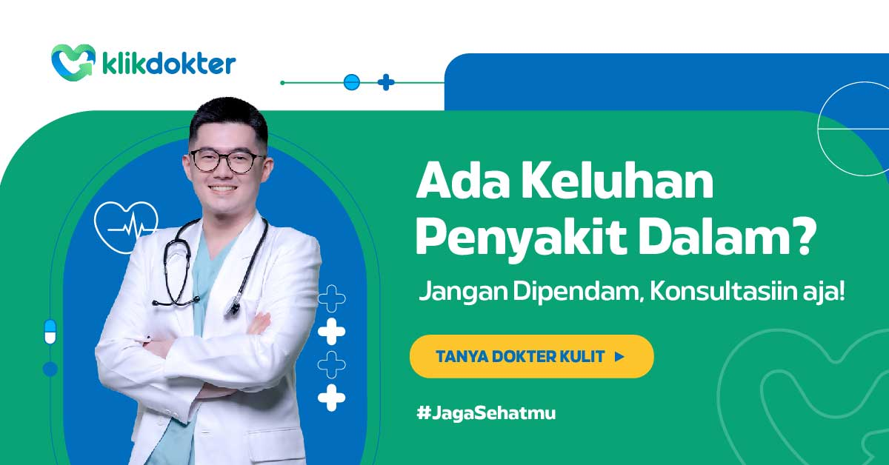
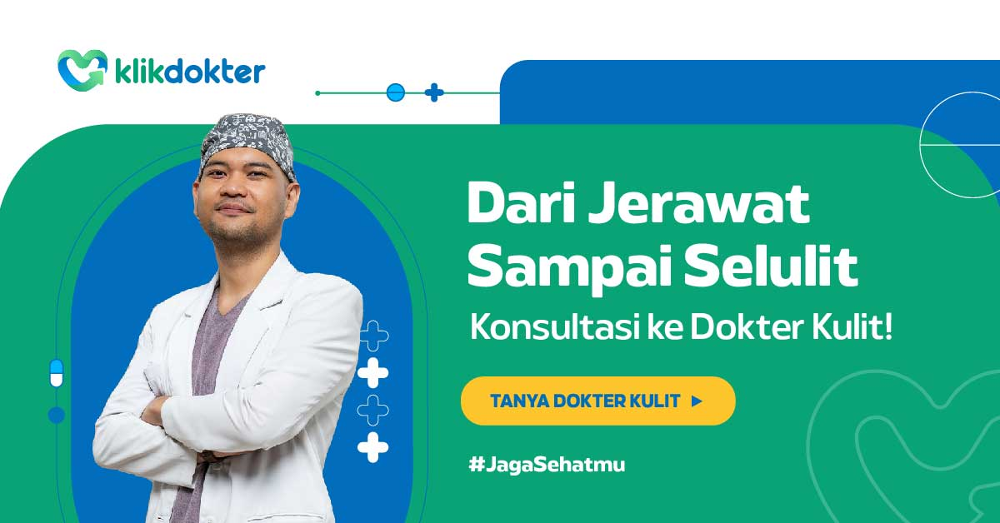
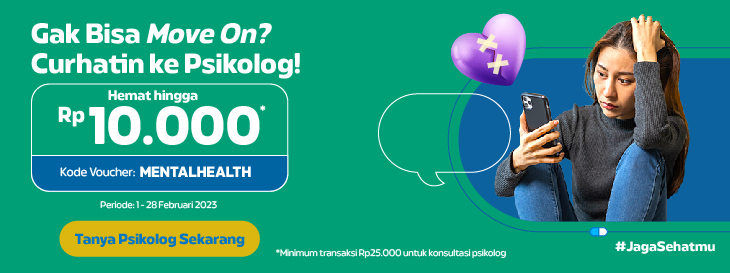

KlikDokter Digital Advertising
Good advice still has to earn a second of attention.
Turning everyday health information into platform-native copy that people can understand at a glance.

An unforgiving canvas
A banner or social ad rarely has the luxury of a slow build. The reader is scrolling, the space is tight, and the message is competing with everything else in the feed. Health advice has an additional challenge: it can sound either too technical or too preachy.
A different rhythm for each format
Across Google Display Network placements, Facebook, and Instagram, I worked with concise, conversational writing built around recognisable daily concerns. The goal was to make the advice feel immediately relevant, with a helpful nudge rather than a lecture.
Small copy, considered decisions
Every headline, visual cue, and call to action has to carry its weight. This selection shows the quieter craft of copywriting: choosing what to say, what to leave out, and how to make the next step feel easy.
See the work.
Original campaign imagery and films from Dan Pradana's archive, hosted in this repository.









Creative credits.
The original portfolio did not specify the wider production team. No additional names have been assumed.